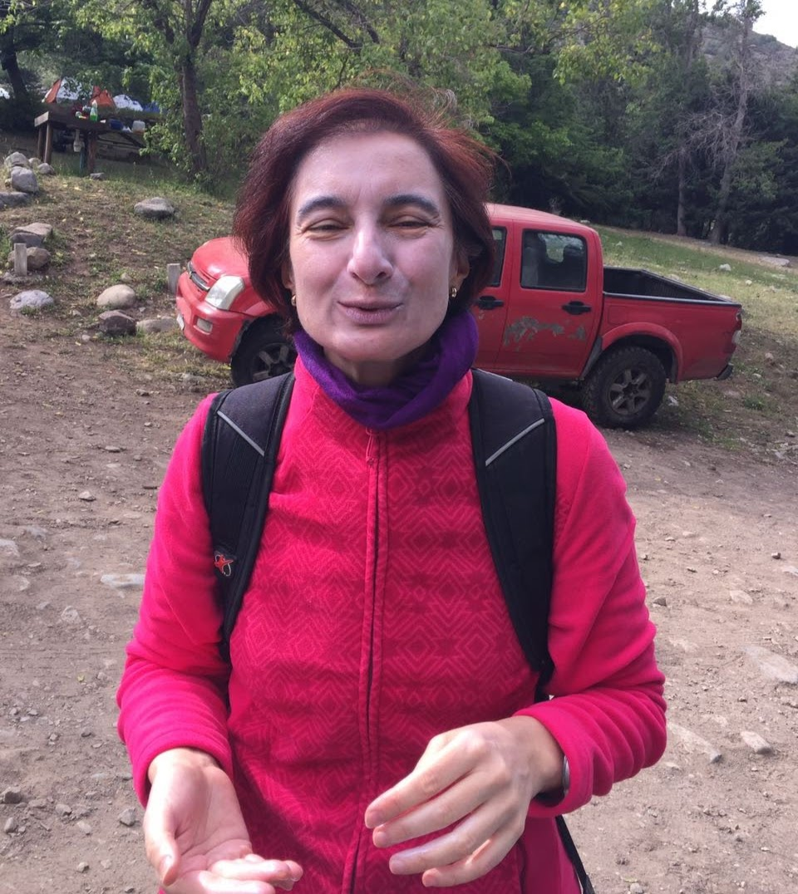
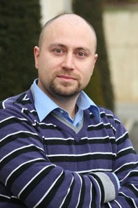
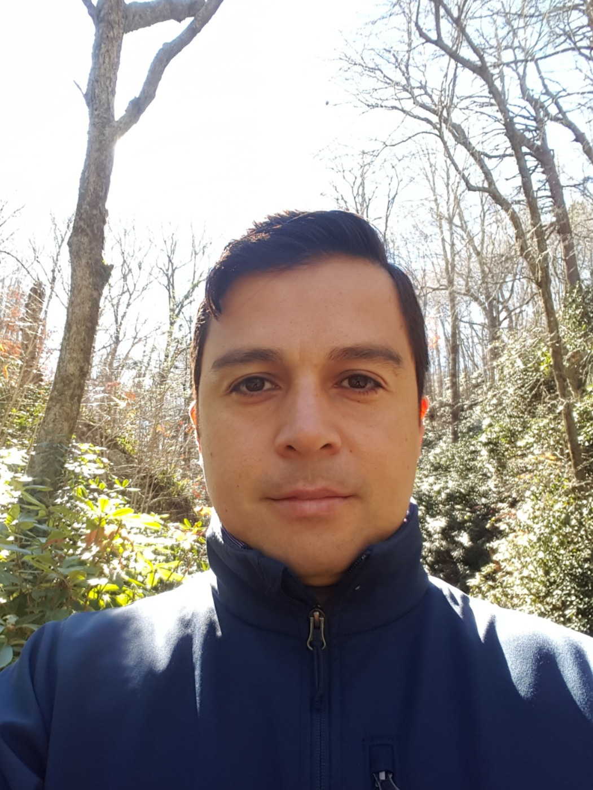

The BNP-ISBA board members
Maria De Iorio. Section Chair 2022.
Maria is a Professor of Science at Yale-NUS College and Professor of Biostatistics in the Department of Statistical Science at University College London. Her research is mainly focused on Bayesian statistics and how to apply Bayesian methods to analyse data, Bayesian Nonparametrics, Biostatistics, Medical Statistics, Genomics, Metabonomics. For more information, visit her website.
Alejandro Jara. Section Chair-Elect 2022.
Alejandro is a Associate Professor of Statistics at the Department of Statistics, Pontifical Catholic University of Chile. His main research interest lies in Nonparametric Bayesian Statistics, Markov Chain Monte Carlo methods, and Statistical Computing. For more information, visit his website.
Subhashis Ghoshal. Past Chair 2022.
Subhashis is a Distinguished Professor at the Department of Statistics, North Carolina State University, Raleigh, U.S.A. His current research interests include Bayesian nonparametrics, high-dimensional and graphical models, asymptotic statistics, differential equation models, image processing, functional data analysis et cetera. For more information, visit his website.
Alessandra Guglielmi. Program Chair 2020-2021.
Alessandra is a Professor in Statistics at the Department of Mathematics, Politecnico di Milano, Italy. Her main research field has always been Bayesian nonparametrics. Her recent interests focus on mixture models and their connection to random partition models, but also on some applied problems in medicine, healthcare management, and population density dynamics. For more information, visit her website.
Fabrizio Leisen. Treasurer 2020-2021.
Fabrizio is a Professor of Statistics at the University of Nottingham. His research mainly focuses on Bayesian nonparametrics, Bayesian computations and Objective Bayes. Fabrizio's research investigated the use on nonparametric priors in non-exchangeable settings. Applications of his methodologies are in biostatistics, finance, survival analysis, social sciences and network modelling. For more information, visit his website.
Andrés Felipe Barrientos. Secretary 2021-2022.
Felipe is an Assistant Professor in the Department of Statistics at Florida State University. His research focuses on developing and studying methodological procedures in statistical science that incorporate flexible Bayesian modeling and approaches for data privacy with special interest in regression density estimation, hypothesis testing, probabilistic methods for complex data, and differentially private procedures. For more information, visit his website.